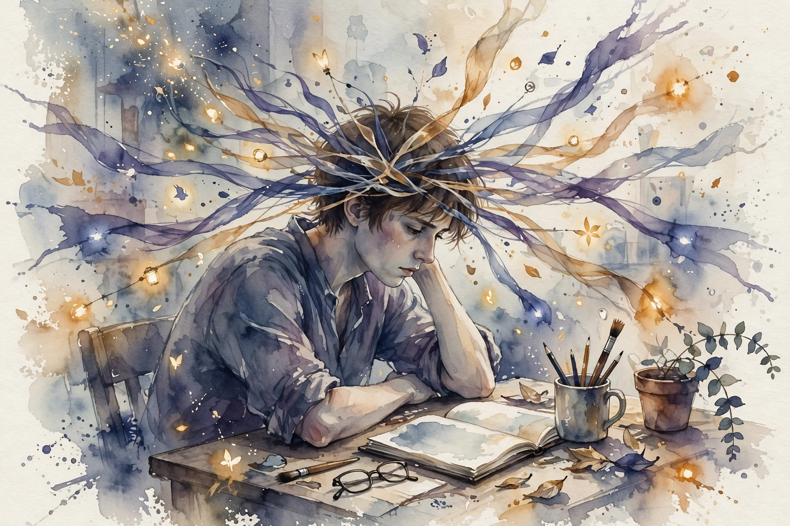

Interactive companion
The Real Reason You Cannot Focus

47 seconds
Source fact The episode centers on one number from psychologist Gloria Mark research: the average person attention on any single screen now sits at just 47 seconds.
Published research Mark, a professor of informatics at UC Irvine, measured this with background computer logging across two decades of field studies, not self-report. In 2004, workers stayed on one screen about 2.5 minutes before switching. By 2012, about 75 seconds. From about 2016 onward, an average of 47 seconds, with a median of 40 seconds: half of all observed stretches ended in 40 seconds or less. In a public interview Mark noted nearby replications of 44 and 50 seconds, averaging to about 47.
Average time on one screen before switching
Gloria Mark field studies, UC Irvine
Published research: G. Mark, Attention Span (2023) and associated UC Irvine field studies, re-verified 2026-10-08. Published research
Interpretation Averages and medians answer different questions. A 47-second average does not mean every screen visit lasts 47 seconds. One 20-minute writing session plus five rapid checks of calendar, chat, inbox, and browser all enter the same distribution. The pattern is real, but it describes behavior, not a biological limit, which means it is largely reversible.
The enemy inside
Source fact The episode asks: what if the thing pulling your attention away is not your phone at all, but something happening inside your own mind? Even when nothing around us buzzes or beeps, we still find ways to interrupt ourselves.
Published research Mark research found that people interrupt themselves almost as often as external sources interrupt them. In her book she reports that 44 percent of the time, people switch their attention without any visible trigger: mid-task, the urge to check something else simply arrives. The more we are interrupted from the outside, the more we start interrupting ourselves.
Where interruptions come from
Share of attention switches with no visible trigger
Published research: G. Mark, Attention Span (2023). Published research
The 44 percent figure is from the published research. The 56 percent is its complement, shown for visual proportion.
Nugget 1 · The enemy inside
We internalized the interruption
What happened. The urge to check now arrives from inside, even when the phone is silent. Almost half of attention switches have no visible trigger.
Why it matters. Blaming the phone misses the mechanism. The distraction habit moved indoors, into the nervous system itself.
The principle. Fix the trigger, not the device. A silent phone does not fix an impatient mind.
Source: episode description + published research. Source fact
The doctor on the plane
Source fact The episode tells the story of a doctor who books a round-trip flight just to escape Wi-Fi long enough to write a grant. No meetings, no messages, no way to be reached: altitude as a focus strategy.
Interpretation The anecdote is funny because it is expensive. When focus requires buying a plane ticket, the environment has won. But it also proves the point about reversibility: remove the channels, and the mind can still do the deep work. The attention system is not broken. It is overfed.
Attention as a rhythm
Source fact The track index summarizes the episode closing argument: attention works as a rhythm, and focus can be rebuilt from the inside.
Published research Mark calls the restless switching pattern kinetic attention: attention that is not simply present or absent, but active, repeatedly redirected, often spread across several tools. Her published work argues for flowing with the natural rhythms of attention rather than fighting them: matching tasks to the mind state instead of demanding one flat state all day.
Nugget 2 · Attention rhythm
Stop demanding a flat line
What happened. Attention moves in rhythms. The research describes it as kinetic: active and redirectable, not a switch that is on or off.
Why it matters. If focus is a rhythm, the job is the conductor, not the clamp. Fighting the rhythm burns the same energy you want to save.
The principle. Design the day around the rhythm. Deep work when the mind is deep, shallow work when it is not.
Source: track index summary + published research. Source fact
Rebuilding focus
Interpretation Without the episode transcript, the specific exercises from the show cannot be reconstructed, and this companion does not try. What the sourced material supports: the problem is behavioral and environmental, which makes it reversible. The first fix is to notice self-interruption as it happens. The second is to remove channels the way the doctor did, at whatever scale your life allows. The third is to match task depth to the attentional rhythm instead of forcing flat focus.
Interpretation One number to keep: 25 minutes to fully return to a task after an interruption. Every self-interruption is not a 30-second detour. It is a 25-minute debt.
Watch the episode
Official Hidden Brain episode video for The Real Reason You Cannot Focus.The official Hidden Brain episode video, embedded via youtube-nocookie.com, the only external dependency on this page.
Nugget index
- Nugget 1. We internalized the interruption (The enemy inside)
- Nugget 2. Stop demanding a flat line (Attention as a rhythm)